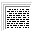

Қозыбекова
Әсем Темірханқызы ««Атбұлақ» жанында интернаты бар жалпы орта
мектеп» Жанұядағы ана мен бала арасындағы қарым-қатынасты нығайту.
Анаға деген бала махаббатын ояту. Оқушы бойындағы өнері мен дарындылығын
дамыту. Адамгершілікке тәрбиелеу 73 Kb.
 1
оқу
Цифры
в тексте после названия достопримечательностей это мои пометки на карте, не
обращайте внимания 0.52 Mb.
1
оқу
[00: 00:
00] [Начало записи] Модератор Давайте начнем с 10 минут и затем, если будет аудитория
согласна, можно будет немножко продлить и оставить время для дискуссии. Я
думаю, что еще, может быть, подтянутся какие-нибудь желающие либо кто-то из
докладчиков придет 261.5 Kb.
5
оқу
Уважение
к минувшему – вот черта, отделяющая образованность от дикости. А. С.
Пушкин Симашко Т. В. История лингвистических учений : античность,
средневековье : учеб пособие для студентов вузов / Т. В. Симашко; Помор гос
ун-т им. М. В. Ломоносова. – Архангельск, 2001. – 215 с 1.16 Mb.
14
оқу
«северо-кавказская
государственная гуманитарно-технологическая академия» 87.25 Kb.
1
оқу
Белов
александр Иванович Антропологический детектив Серия Эволюционная теория явно нуждается в эволюции! Сегодня для
всех стало очевидно, что вышколенная система взглядов на историю и на
происхождение человека требует серьезного пересмотра Книга
6.26 Mb.
34
оқу
Жития
святых, на русском языке, изложенные по руководству Четьих-Миней Св.
Димитрия Ростовского
76.15 Kb.
1
оқу
Биографические
сведения о русских писателях. Часть пятая Влади́мир Влади́мирович Набо́ков (англ. Vladimir Nabokov,
выступал также под псевдонимом «Сирин», 10 (22) апреля 1899[1],
Санкт-Петербург, Российская Империя — 2 июля 1977, Монтрё 0.59 Mb.
3
оқу
Оригинал:
английский Межправительственный комитет по интеллектуальной
собственности, генетическим ресурсам, традиционным знаниям и фольклору
431 Kb.
1
оқу
Роль
медицинской сестры в решении проблем пациентов с сахарным диабетом 1-го
типа Курсовая
209.14 Kb.
4
оқу
Закон
об амнистии. С 29 мая 2015 г вступил в силу Закон Республики Беларусь от 28
мая 2015 г. №259-з «Об амнистии в связи с 70-летием Победы в Великой
Отечественной войне 1941-1945 годов» С 29 мая 2015 г вступил в силу Закон Республики Беларусь от
28 мая 2015 г. №259-з «Об амнистии в связи с 70-летием Победы в Великой
Отечественной войне 1941-1945 годов» (далее – Закон), который подлежит
исполнению в течение шести месяцев Закон
20.32 Kb.
1
оқу
Генри
Гвин Джефрис Мозли установил закон Когда энергия бомбардирующих электронов становится
достаточной для вырывания электронов из внутренних оболочек атома, на фоне
тормозного излучения появляются резкие линии характеристического излучения
Закон
74.5 Kb.
1
оқу
Кыргыз
Республикасынын Өкмөтү «Кыргыз Республикасынын Бажы кодексинин талаптарын
ишке ашыруу боюнча чаралар жөнүндө» «Кыргыз Республикасынын Бажы кодексинин талаптарын ишке
ашыруу боюнча чаралар жөнүндө» Кыргыз Республикасынын Өкмөтүнүн 2005-жылдын
11-мартындагы №123 токтомуна өзгөртүүлөрдү киргизүү жөнүндө 45.68 Kb.
1
оқу
Деформирующий
артроз коленного сустава Известное врачам более 100 лет это заболевание в быту носит
название "отложение солей" 44.68 Kb.
1
оқу
Жарма
ауданы бойынша қала, кент, ауылдық округтер әкімдерінің 2012 жылғы 7
ақпаннан 14 ақпан аралығында халық алдында есеп беру кездесулерінің желілік
кестесі Жарма ауданы бойынша қала, кент, ауылдық округтер әкімдерінің
2012 жылғы 7 ақпаннан 14 ақпан аралығында халық 66.94 Kb.
1
оқу
Алгебралық
ТҮрлендірулер Ал алгебрада өрнектерді ықшамдап, мәнін табу; тепе
тендіктерді дәлелдеу; теңдеулерді шешу түрлендірусіз мүмкін емес. Ол үшін
қысқаша көбейту формуласын пайдалану тәсілдерін білудің маңызы зор. Мысалдар
74.58 Kb.
1
оқу
Нефтяная
и газовая промышленность материалы буровых растворов технические условия и
испытания 0.68 Mb.
8
оқу
Бастапқы
заттың біреуі артық мөлшерде берілгенде химиялық реакция теңдеуі бойынша
реакция өнімін есептеу Массасы 33,3 г кальций хлориді бар ерітінді мен массасы 16,4
г натрий фосфаты бар ерітіндіні араластырғанда неше грамм алюминий
гидроксиді түзіледі? 60.19 Kb.
1
оқу
Құрбанов
А. Г. – ф.ғ. к., доцент, Үкібасова Қ. А. –ф.ғ. к., аға оқытушы, Қайырбекова
Ұ.Қ Статья посвящена актуальным проблемам займствование в
казахский язык вводных слов Статья
105.85 Kb.
1
оқу
Ф. боде и
сыновья лтд Презентация
97.09 Kb.
1
оқу
Симфонический
оркестр филармонии начал зарубежный гастрольный тур концертом на бывшем
заводе Третьего рейха Кий оркестр дал первый концерт своего зарубежного турне: в 20
часов по местному времени (23 по Москве) начался концерт коллектива в
Пенемюнде, в помещении бывшего завода по изготовлению баллистических ракет
Третьего рейха 63.54 Kb.
1
оқу
Диагностика
и лечение эректильной дисфункции у сердечно-сосудистых больных Кафедра клинической фармакологии и внутренних болезней (зав
профессор А. Л. Верткин), кафедра урологии с курсом андрологии (зав.
–профессор Д. Ю. Пушкарь.) Мгмсу и 92.51 Kb.
1
оқу
Дипломдық
жұмыс 1945-1980 ж ж. Жапонияның экономикалық дамуы.ң Орындаған: тарих
факультетінің Жапонияға бүкіл әлемнің қызығушылығы да едәуір зор болды
екінші дүние жүзілік соғыстан кейінгі Жапонияның тез өнеркәсіптік өсуі,
бүкіл әлемнің көңілін өзіне аудартты Диплом
430.5 Kb.
4
оқу
Отырар
ауданының 2014 жылдың қаңтар-қазан айларының қорытындысы бойынша
әлеуметтік-экономикалық көрсеткіштері Аудан кәсіпорындары (шағын, қосалқы кәсіпорындар, үй
шаруашылығы секторын қоса алғанда) 2014 жылдың 10 айындағы кәсіпорындарда
қолданып жүрген бағамен 12 442,0 млн теңгенің өнеркәсіп өнімін шығарды
391.77 Kb.
1
оқу
Справ,
призначених до розгляду в касаційній інстанції судовою палатою у цивільних
справах Вищого спеціалізованого суду України з розгляду цивільних і
кримінальних справ Чумаченко Г. Р. до тов агропромислове підприємство «Восход»,
треті особи: Брюховецький Ю. О., Зат «Українська страхова компанія
0.63 Mb.
4
оқу
Информация
о приеме граждан, представителей организаций, общественных объединений в
органах местного самоуправления Сокольского муниципального района и их
структурных подразделениях Фио и должность лица, к полномочиям которого отнесены
организация приема граждан, представителей организаций, общественных
объединений и обеспечение рассмотрения их обращений, номер телефона / виды
приема 52.5 Kb.
1
оқу
Баранов Ю.
Казань Батуев М 146.11 Kb.
1
оқу
Приложение
Размножение гидрофитов 8.08 Kb.
1
оқу
Қазақстан
Республикасы Статистика агенттігінің бұйрығы 2013 жылғы 28 қараша №279
Астана қаласы Республикасы Статистика агенттігінің кейбір бұйрықтарына
өзгерістер енгізу туралы 0.49 Mb.
6
оқу
Обзор
практики по рассмотрению обращений страховых организаций по вопросам
осуществления страховых выплат в порядке прямого урегулирования
Большое количество обращений страховых организаций к
Страховому омбудсману основано на претензиях к ответственному страховщику по
вопросу возврата суммы страховой выплаты, осуществленной прямым страховщиком
Обзор
42.8 Kb.
1
оқу